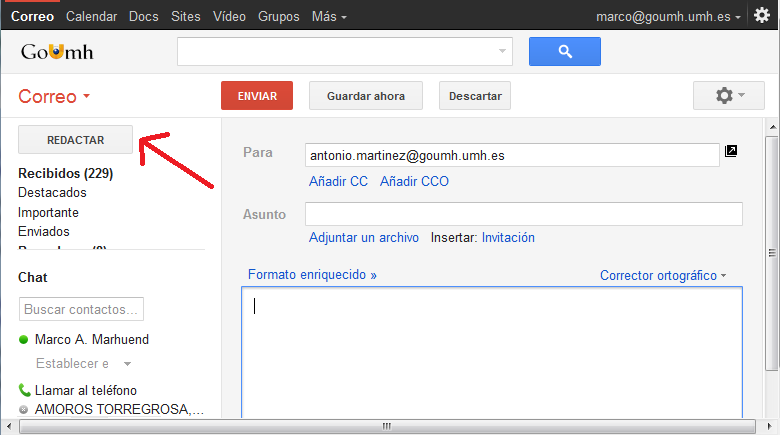

Actividades
16 de Noviembre del 2020
- El concepto de Actividades
- Estado de actividad y expulsión de memoria
- Información sobre las tareas y pila de actividades
Introducción a las actividades
Concepto de actividades
Por ejemplo, la actividad principal de una app de correo electrónico simple podría proporcionar una pantalla en la que se muestra una casilla de correo electrónico. A partir de aquí, la actividad principal podría iniciar otras actividades que proporcionan pantallas para tareas como redactar correos y abrir correos electrónicos individuales.

Class Activity
Cómo declarar actividades
Para declarar la actividad, abrir el archivo de manifiesto y agrega el elemento
El único atributo obligatorio para este elemento es android:name, que especifica el nombre de la clase de la actividad. También puedes agregar atributos que definan las características de la actividad, como una etiqueta, un ícono o un tema de IU.
Cómo declarar filtros
Estos proporcionan la capacidad de iniciar una actividad no solo en función de una solicitud explícita, sino también de una implícita.
Por ejemplo, una solicitud explícita podría indicar al sistema que debe "Iniciar la actividad 'Enviar correo electrónico' en la app de Gmail". En cambio, una solicitud implícita le indica al sistema que debe "Iniciar una pantalla 'Enviar correo electrónico' en cualquier actividad que pueda realizar la tarea".
En este ejemplo, el elemento
Cómo declarar permisos
Una actividad superior no puede iniciar una actividad secundaria, a menos que ambas tengan los mismos permisos en su manifiesto.
Puedes usar la etiqueta
Por ejemplo, si tu app quiere usar una app hipotética llamada SocialApp para compartir una publicación en las redes sociales, SocialApp debe definir el mismo permiso que la app que la llama debe tener:

Para poder llamar a SocialApp, tu app debe tener el mismo permiso que se estableció en el manifiesto de SocialApp.
Cómo administrar el ciclo de vida de una actividad
Para navegar por las transiciones entre las etapas del ciclo de vida de una actividad, la clase Activity proporciona un conjunto básico de seis devoluciones de llamadas: onCreate(), onStart(), onResume(), onPause(), onStop() y onDestroy(). El sistema invoca cada una de estas devoluciones de llamada cuando una operación entra en un nuevo estado.

onCreate()
Si tienes un componente que prioriza el ciclo de vida y que está conectado al ciclo de vida de tu actividad, recibirá el evento ON_CREATE. Se llamará al método anotado con @OnLifecycleEvent para que tu componente que prioriza el ciclo de vida pueda realizar cualquier código de configuración que necesite para el estado de creación.
onStart()

El método onStart() se completa muy rápido y, al igual que con el estado Created, la actividad no permanece en el estado Started. Una vez finalizada esta devolución de llamada, la actividad entra en el estado Resumed, y el sistema invoca el método onResume().
onResume()
Cuando se reanude la actividad, cualquier componente que priorice el ciclo de vida vinculado al de la actividad recibirá el evento ON_RESUME. Aquí es donde los componentes del ciclo de vida pueden habilitar cualquier funcionalidad que necesite ejecutarse mientras el componente esté visible y en primer plano, como, por ejemplo, iniciar una vista previa de la cámara.
onPause()
El sistema llama a onPause() cuando la actividad pierde el foco y pasa al estado Detenida. Este estado se produce, por ejemplo, cuando el usuario presiona el botón Atrás o Recientes.
Cuando el sistema llama a onPause() para tu actividad, significa que esta aún está parcialmente visible, pero, a menudo, indica que el usuario está saliendo de la actividad y que esta pronto pasará al estado Detenida o Reanudada.
No debes usar para guardar datos de la aplicación o del usuario, realizar llamadas de red o ejecutar transacciones de base de datos
Entre los ejemplos de tal actividad, se incluye mostrar una pantalla de mapa de navegación o la reproducción de un reproductor multimedia. Incluso si estas actividades pierden el foco, el usuario espera que su IU continúe actualizándose.
onStop()
El sistema llama a onStop() cuando la actividad ya no es visible para el usuario, lo cual puede ocurrir porque se está eliminando la actividad, porque se inicia una nueva o porque una ya existente pasa al estado Reanudada y cubre la actividad que se detuvo. En todos estos casos, la actividad detenida ya no está visible en absoluto. La siguiente devolución de llamada que el sistema invoca puede ser onRestart() si la actividad vuelve a interactuar con el usuario o onDestroy() si esta actividad finaliza por completo.
En el método onStop(), la app debe liberar o ajustar los recursos que no son necesarios mientras no sea visible para el usuario. Por ejemplo, tu app podría pausar animaciones o cambiar de actualizaciones de ubicación detalladas a más generales. Usar onStop() en lugar de onPause() garantiza que continúe el trabajo relacionado con la IU, incluso cuando el usuario esté viendo tu actividad en el modo multiventana.
onRestart()
onDestroy()
Cuando la actividad pase al estado Destroyed, cualquier componente que priorice el ciclo de vida vinculado al de la actividad recibirá el evento ON_DESTROY. Aquí es donde los componentes del ciclo de vida pueden recuperar cualquier elemento que se necesite antes de que finalice el objeto Activity.
Si la actividad está terminando, onDestroy() es la devolución de llamada del ciclo de vida final que recibe la actividad. Si se llama a onDestroy() como resultado de un cambio de configuración, el sistema crea inmediatamente una nueva instancia de actividad y luego llama a onCreate() en esa nueva instancia en la nueva configuración.
Cómo administrar el ciclo de vida de una actividad
Una buena implementación de las devoluciones de llamada de un ciclo de vida puede ayudar a garantizar que tu app:.